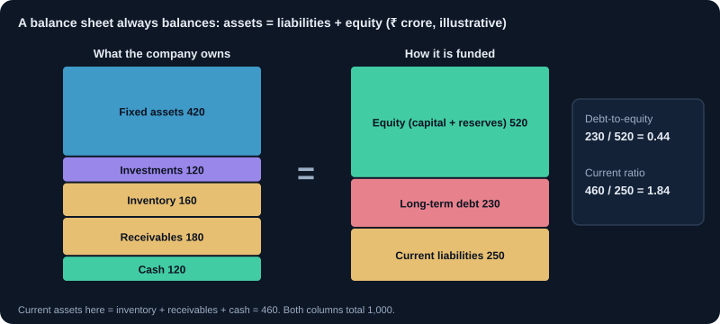
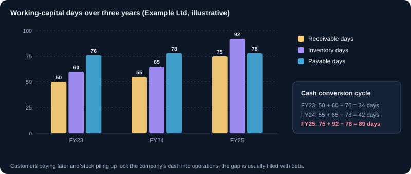

How to Read a Balance Sheet
What a balance sheet shows, how to read assets, liabilities and equity, and the ratios that reveal financial strength.
1. What a balance sheet is
A balance sheet lists everything a company owns (assets), everything it owes (liabilities) and the owners' stake (equity) on one date. It always balances: Assets = Liabilities + Equity. Read it with the profit statement and the cash flow statement, because each shows a different part of the story.
- Assets: resources that will bring future benefit (cash, receivables, inventory, property, investments).
- Liabilities: obligations to pay (loans, payables, provisions).
- Equity: what is left for shareholders after liabilities: share capital plus reserves and surplus.
2. Current and non-current assets
Assets are split by how quickly they turn into cash. Current assets convert to cash within a year (cash, receivables, inventory). Non-current assets stay longer (factories, land, long-term investments). A company with little cash and large short-term obligations is under pressure even if its total assets are large.
3. Current and non-current liabilities
Liabilities follow the same split. Short-term borrowings and payables due within a year are current. Long-term loans are non-current. Compare current liabilities with current assets to judge short-term safety.
4. Reserves, goodwill and intangibles
Reserves are profits kept in the business over time, a sign of past earnings retained. Goodwill and intangible assets appear when a company buys another business for more than its net assets. Large goodwill means the company paid a premium, and it can be written down if the acquisition disappoints.
5. Key ratios from the balance sheet
- Current ratio = current assets ÷ current liabilities. Above 1.5 is generally comfortable; below 1 needs explanation.
- Debt-to-equity = total debt ÷ shareholders' equity. Lower is safer, but the norm depends on the industry (banks and infrastructure carry more debt).
- Book value per share = shareholders' equity ÷ number of shares.
- Working capital = current assets − current liabilities. Negative working capital is normal for some businesses (like retail with fast cash) and a warning for others.
Example: current assets ₹800 crore, current liabilities ₹500 crore, so current ratio = 1.6. Total debt ₹600 crore, equity ₹1,500 crore, debt-to-equity = 0.4.
6. Check the trend, not one year
Compare at least three to five years. Look for rising receivables faster than sales (customers may be slow to pay), inventory building up (products may not be selling), and debt rising while equity is flat. These trends often show problems before the profit does.
7. Common traps
- Treating total assets as strength. Assets can be overvalued or illiquid.
- Ignoring off-balance-sheet commitments and contingent liabilities, which are listed in the notes.
- Missing related-party balances, such as loans to group companies.
- Comparing a bank's balance sheet with a manufacturer's using the same ratios.
8. A reading routine
- Check the total and confirm assets equal liabilities plus equity.
- Compare current ratio and debt with the last three years.
- Read the notes on borrowings, contingent liabilities and related parties.
- Compare the company's ratios with two or three close peers.
9. The Indian format: Schedule III and Ind AS
Listed companies in India present the balance sheet in the format of Schedule III of the Companies Act, 2013, using Indian Accounting Standards (Ind AS). The order is always the same, so once you know it you can read any company quickly. Most companies publish two versions: standalone (the company alone) and consolidated (the company with its subsidiaries). Read the consolidated one for groups.
- Non-current assets: property, plant and equipment, capital work-in-progress, goodwill and intangibles, long-term investments and loans.
- Current assets: inventories, trade receivables, cash and bank balances, short-term investments and other current assets.
- Equity: equity share capital (number of shares × face value) and other equity (reserves and surplus).
- Non-current liabilities: long-term borrowings, lease liabilities, long-term provisions and deferred tax liabilities.
- Current liabilities: short-term borrowings (including the part of long-term loans due within a year), trade payables and other current liabilities.
10. A worked balance sheet
Example Ltd, consolidated, ₹ crore, as at 31 March. Read across the two years before you calculate any ratio.
| Line item | FY24 | FY25 |
|---|---|---|
| Property, plant and equipment | 900 | 1,050 |
| Goodwill and intangibles | 100 | 100 |
| Inventories | 250 | 380 |
| Trade receivables | 300 | 450 |
| Cash and bank | 150 | 70 |
| Total assets | 1,700 | 2,050 |
| Share capital (10 crore shares of ₹10) | 100 | 100 |
| Reserves and surplus | 900 | 980 |
| Long-term borrowings | 300 | 450 |
| Short-term borrowings | 100 | 200 |
| Trade payables | 300 | 320 |
| Total equity and liabilities | 1,700 | 2,050 |
What it shows: equity grew 8% (₹1,000 to ₹1,080 crore) but borrowings grew 62.5% (₹400 to ₹650 crore), so debt-to-equity rose from 0.40 to 0.60. The current ratio barely moved (1.75 to 1.73), which looks calm, yet cash fell from ₹150 to ₹70 crore while receivables and inventory each jumped about 50%. If sales grew only 10%, borrowed money is being tied up in unpaid bills and unsold stock. One ratio hid the problem; the line items revealed it.
11. The working-capital cycle in days
Converting balances into days makes companies of any size comparable and shows trends clearly.
- Receivable days = trade receivables ÷ sales × 365. How long customers take to pay.
- Inventory days = inventories ÷ cost of goods sold × 365. How long stock sits before it is sold.
- Payable days = trade payables ÷ cost of goods sold × 365. How long the company takes to pay suppliers.
- Cash conversion cycle = receivable days + inventory days − payable days. The number of days the company's own money is locked up in operations.
Example Ltd, FY25: sales ₹2,200 crore (FY24: ₹2,000 crore), cost of goods sold ₹1,500 crore. Receivable days = 450 ÷ 2,200 × 365 ≈ 75 (FY24: about 55). Inventory days ≈ 92, payable days ≈ 78, so the cash conversion cycle ≈ 75 + 92 − 78 = 89 days. A cycle that lengthens year after year usually needs more borrowing.
12. Return ratios: linking the balance sheet to profit
The balance sheet tells you how much capital a business uses. The profit statement tells you what it earns. Together they show how well capital is used.
- Return on equity (ROE) = net profit ÷ average shareholders' equity. What the business earns on the owners' money.
- Return on capital employed (ROCE) = EBIT (operating profit before interest and tax) ÷ (equity + borrowings). What it earns on all the long-term money in the business, so debt cannot flatter it.
- Interest coverage = EBIT ÷ interest cost. How many times operating profit covers interest. Below 2 to 3 is uncomfortable for most businesses.
Example Ltd, FY25: net profit ₹120 crore, average equity (1,000 + 1,080) ÷ 2 = ₹1,040 crore, so ROE ≈ 11.5%. EBIT ₹200 crore on capital employed of 1,080 + 650 = ₹1,730 crore gives ROCE ≈ 11.6%. Interest of ₹50 crore gives interest coverage of 4 times. If ROCE is below the interest rate on new loans, growth funded by debt destroys value.
13. Different industries, different balance sheets
Ratios that are healthy in one industry are alarming in another. Always compare a company with close peers.
- Banks and NBFCs: loans are their assets and deposits or borrowings their raw material, so the current ratio and debt-to-equity do not apply. Read capital adequacy, gross and net NPAs (bad loans), provisions and, for banks, the CASA ratio.
- IT services and asset-light businesses: little debt and large cash. Watch receivable days and how cash is used.
- FMCG and retail: often negative working capital, because customers pay at once while suppliers are paid later. This is a strength, not a warning.
- Infrastructure, power and telecom: heavy debt against long-life assets is normal. Focus on interest coverage, debt repayment schedules and project delays.
- Real estate: inventory is land and unfinished projects, and customer advances sit in liabilities. Read project-wise disclosures.
Charts and visuals


Worked examples
Debt-to-equity in rupees
Company A has debt of ₹200 crore and equity of ₹1,000 crore (debt-to-equity 0.2). Company B has debt of ₹1,500 crore on the same equity (1.5). If interest rates rise by 2 percentage points, A's yearly interest rises by about ₹4 crore and B's by about ₹30 crore. The same rate move hurts B more than seven times as much.
Book value per share and P/B
Equity of ₹1,080 crore and 10 crore shares give a book value of ₹108 per share. At a share price of ₹216, price-to-book is 2: investors pay ₹2 for every ₹1 of net assets, betting that the business will earn well on them.
Real-life scenarios
Sales up, cash down
A company reports 10% sales growth and record profit. Its balance sheet shows cash down from ₹150 to ₹70 crore, borrowings up by ₹250 crore and receivable days up from 55 to 75. Before buying, read the note on receivables ageing (how much is overdue) and what management says about customer payments.
Goodwill that turns into a loss
A company buys a rival for ₹800 crore when the rival's net assets are ₹300 crore, so ₹500 crore is recorded as goodwill. Two years later the acquired business disappoints and ₹300 crore of goodwill is written off. Reported profit and equity fall sharply that year, though the cash was actually spent two years earlier.
Use cases
- Screening out non-financial companies with debt-to-equity above 1 before doing deeper research.
- Judging whether a dividend is likely to continue: steady cash and low debt make it safer.
- Spotting working-capital stress early by tracking receivable and inventory days each year.
- Comparing price with book value per share to see how much of the price depends on future earnings.
Key takeaways
- Assets always equal liabilities plus equity; the question is what those assets and liabilities are made of.
- Read at least three to five years and the line items, not just one ratio.
- Receivable and inventory days reveal problems before profits do.
- ROE and ROCE show how well the business uses its capital; compare ROCE with the cost of borrowing.
- Judge a balance sheet against its industry: banks, IT companies and retailers look very different.
Key terms, explained
- Balance sheet
- A statement of assets, liabilities and equity at one point in time.
- Current ratio
- Current assets divided by current liabilities. It shows whether a company can pay its short-term obligations.
- Debt-to-equity
- Total debt divided by shareholders' equity. Higher values mean more borrowing.
- Book value per share
- Shareholders' equity divided by the number of shares outstanding.
- Working capital
- Current assets minus current liabilities. The money available to run daily operations.
- Reserves
- Profits kept in the business over time instead of being paid out as dividends.
- Goodwill
- The extra amount paid to buy a business above the value of its net assets. Recorded on the balance sheet.
- Contingent liabilities
- Possible obligations that depend on a future event, such as a lawsuit. Disclosed in the notes to accounts.
Questions learners ask
Where do I find a company's balance sheet?
In the annual report, and in the half-yearly results: listed companies publish a statement of assets and liabilities with their results for September and March. Both are on the NSE and BSE company pages and on the company's investor relations page.
Standalone or consolidated: which should I read?
Read consolidated when the company has subsidiaries, because it shows the whole group's debt and assets. Standalone can hide borrowings held in subsidiaries. Read standalone too when you want to see what the parent company itself owes.
Is a company with zero debt always better?
It is safer, but not automatically better. A business earning a high ROCE can sensibly use some debt to grow. What matters is whether profit covers interest comfortably and whether borrowed money earns more than it costs.
What does negative 'other equity' or reserves mean?
Accumulated losses are larger than the profits and premiums retained. The company has lost part of the money shareholders put in. Check whether losses are still growing and how the company is funding itself.
Educational content only, not investment advice. Markets carry risk, including loss of capital. Examples are simplified and may exclude charges, taxes and slippage.